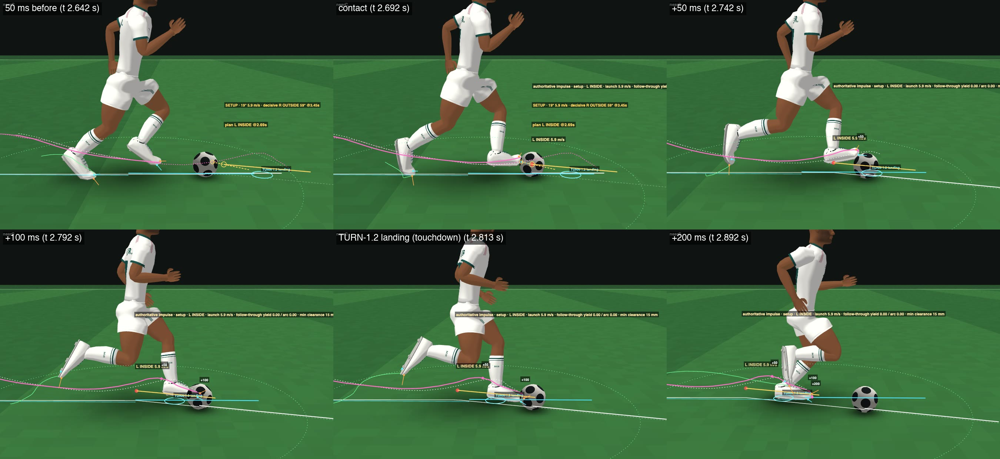
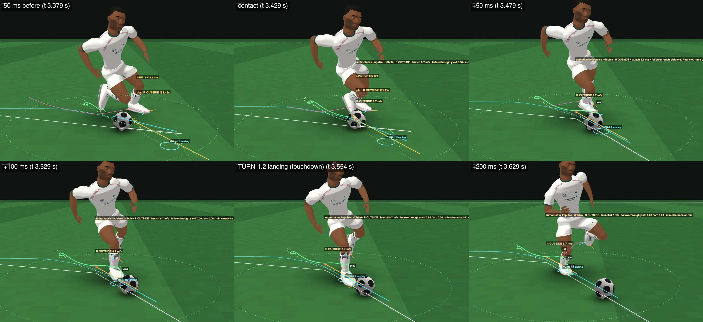
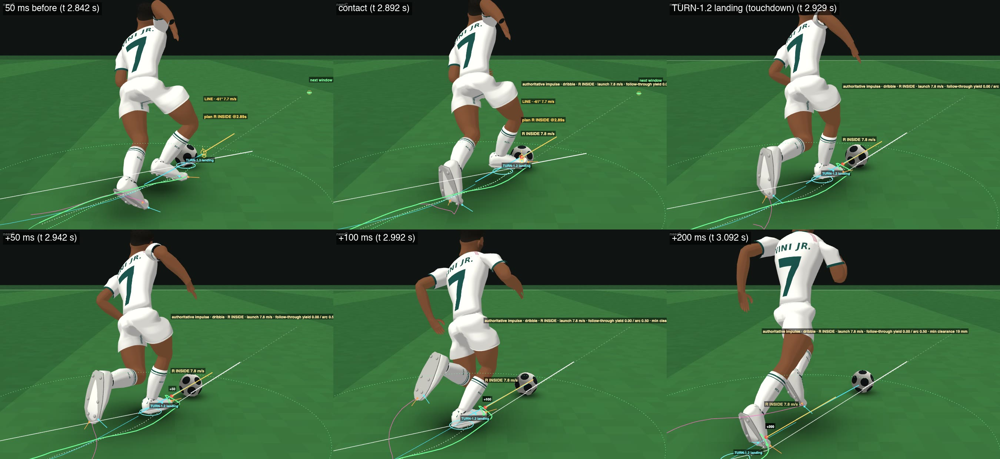

DRIBBLE-1.2 — cut contact geometry / set-up touch
17 Oct 2026 · branch prototype/dribble-1 (DRIBBLE-1 7fe57fd3 and DRIBBLE-1.1 7d8c8524 preserved, their files untouched) · instruction review_artifacts/dribble12/sources/2026-10-17_user_instruction_dribble1_2_cut_contact_geometry_setup_touch.md · local review page (real player names) · live labs: DRIBBLE-1.2 · DRIBBLE-1.1 · DRIBBLE-1
TURN-1.2 UNCHANGED: YES — no locomotion file changed; at 30,692 adjusted ticks the stance foot / toe equals TURN-1.2's own pose (max 0.0000 mm), unadjusted swing feet 0.0000 mm
RESOLVED TOUCH ARCHITECTURE UNCHANGED: YES — one authoritative impulse per touch through BALL-FEEL-1.3's launch interface (kernel untouched); free physical ball between touches
SETUP TOUCH SYSTEM: PARTIAL — real physical set-ups (no placing), used in 25–38 % of cuts, ~6 m/s, 14–21° off the line, 0.53 s after the request (median); 14 of 24 set-ups end with the cut taken (9 cleanly), 10 lose the ball — in the traced cases because the decisive contact was validated on the nominal ball and the executed set-up left it unsolvable
FUTURE CONTACT CORRIDOR: PASS — exact convex corridor of feasible ball centres per predicted (exact, time-warped) TURN-1.2 swing pose, surface, impulse normal and elevation; validated against the per-ball contact check; set-ups aim at its centre
GENUINE OUTSIDE-FOOT CUT CONTACT: PASS — 41 % of cut / stage touches and 45 % of decisive cut touches are OUTSIDE (DRIBBLE-1.1: 0 of 1,574 touches)
INSIDE-FOOT CUT CONTACT: PASS — 39 % of cut / stage touches, 36 % of decisive cut touches (DRIBBLE-1.1: 3 % / 4 %)
CUT FRONT-OF-BOOT RATE: 8 % of decisive cut touches (DRIBBLE-1.1 88 %, DRIBBLE-1 55 %); 8 % of cut / stage touches (1.1: 94 %); all touches in cut scenarios 51 % (1.1: 96 %)
60° RIGHT TAKEN-WITH-BALL: 7/8 (16 seeds 14/16; cleanly 6/8, 9/16) — DRIBBLE-1.1 4/8
60° LEFT TAKEN-WITH-BALL: 6/8 (16 seeds 14/16; cleanly 3/8, 8/16) — below the 7/8 target; DRIBBLE-1.1 5/8
90° RIGHT TAKEN-WITH-BALL: 5/8 (16 seeds 12/16; cleanly 4/8, 9/16) — DRIBBLE-1.1 2/8
90° LEFT TAKEN-WITH-BALL: 5/8 (16 seeds 9/16; cleanly 2/8, 4/16) — DRIBBLE-1.1 4/8
STRAIGHT RUN CONTROL: 100 % (16/16 held to the end; DRIBBLE-1.1 90 %, 13/16); JOG 100 % 16/16, FAST 98.7 % 15/16
SAME-FOOT IMMEDIATE RE-CONTACT: 0.06 % (1 of 1,647 touches, 16 seeds × 20 scenarios; DRIBBLE-1.1 1.1 %, 17 of 1,574)
PREFERRED FOOT BIAS: FAIL — the right-footed elite uses the right foot for 53 % straight, 42 % curve, 48 % 60°, 36 % 90° touches; a stronger preference cost cuts (41 → 30 of 64) and was reverted
PHYSICAL INTERRUPTION: PASS — the tackle leg reaches the ball physically in 13/16 TACKLE_RUN runs and wins it every time; interceptions 4/16
CONTROL LOSS POSSIBLE: YES — failed cuts lose the ball; 257,196 free-ball ticks match a collider-free re-simulation (1 deviation of 0.26 mm two ticks after a 14-tick toe contact: contact persistence, no tether)
AVERAGE RESOLVER CPU: FAIL — 253 ms per simulated second over all 20 scenarios (DRIBBLE-1.1 168, DRIBBLE-1 539, same process); straight 112 (1.1: 114), cuts 303 (1.1: 207)
WORST PLANNING SPIKE: FAIL — 604 ms (one planning pass at the 90° left request; DRIBBLE-1.1 424 ms, DRIBBLE-1 2,419 ms); p99 step 24 ms
CHROME/NODE DETERMINISM: PASS — decisions 20/20 identical; state last-bit differences only (≤ 2.8e-12)
READY FOR OWNER VISUAL REVIEW: YES
READY FOR DRIBBLE-V1 INTEGRATION IF OWNER APPROVES: NO — the resolver's CPU (253 ms/s, spikes to 0.6 s) must be bounded first
I cannot play video in real time; every judgement on this page was made from frame strips and stills of these clips.
Three videos to watch first
DRIBBLE-1 | DRIBBLE-1.1 | DRIBBLE-1.2, same scenario / seed / player, frame-synchronised, 1× speed, the real Touchline gameplay camera · sim 0–6 s ·
C1_cut90R_1x.mp4 · DRIBBLE-1 lab · DRIBBLE-1.1 lab · DRIBBLE-1.2 labclose view (nearC) at 0.25× speed, geometry diagnostics on · sim 2.55–3.6 s ·
e_outside_hero_slow.mp4 · open in the labDRIBBLE-1 | DRIBBLE-1.1 | DRIBBLE-1.2, same scenario / seed / player, frame-synchronised, 1× speed, the real Touchline gameplay camera · sim 0–6 s ·
A1_cut60R_1x.mp4 · DRIBBLE-1 lab · DRIBBLE-1.1 lab · DRIBBLE-1.2 labA — 60° right: DRIBBLE-1 | DRIBBLE-1.1 | DRIBBLE-1.2
DRIBBLE-1 | DRIBBLE-1.1 | DRIBBLE-1.2, same scenario / seed / player, frame-synchronised, 1× speed, the real Touchline gameplay camera · sim 0–6 s ·
A1_cut60R_1x.mp4 · DRIBBLE-1 lab · DRIBBLE-1.1 lab · DRIBBLE-1.2 labDRIBBLE-1 | DRIBBLE-1.1 | DRIBBLE-1.2, same scenario / seed / player, frame-synchronised, 1× speed, the Touchline gameplay camera zoomed 2.6× · sim 0–6 s ·
A2_cut60R_zoom.mp4 · DRIBBLE-1 lab · DRIBBLE-1.1 lab · DRIBBLE-1.2 labB — 60° left
DRIBBLE-1 | DRIBBLE-1.1 | DRIBBLE-1.2, same scenario / seed / player, frame-synchronised, 1× speed, the real Touchline gameplay camera · sim 0–6 s ·
B1_cut60L_1x.mp4 · DRIBBLE-1 lab · DRIBBLE-1.1 lab · DRIBBLE-1.2 labDRIBBLE-1 | DRIBBLE-1.1 | DRIBBLE-1.2, same scenario / seed / player, frame-synchronised, 1× speed, the Touchline gameplay camera zoomed 2.6× · sim 0–6 s ·
B2_cut60L_zoom.mp4 · DRIBBLE-1 lab · DRIBBLE-1.1 lab · DRIBBLE-1.2 labC — 90° right
DRIBBLE-1 | DRIBBLE-1.1 | DRIBBLE-1.2, same scenario / seed / player, frame-synchronised, 1× speed, the real Touchline gameplay camera · sim 0–6 s ·
C1_cut90R_1x.mp4 · DRIBBLE-1 lab · DRIBBLE-1.1 lab · DRIBBLE-1.2 labDRIBBLE-1 | DRIBBLE-1.1 | DRIBBLE-1.2, same scenario / seed / player, frame-synchronised, 1× speed, the Touchline gameplay camera zoomed 2.6× · sim 0–6 s ·
C2_cut90R_zoom.mp4 · DRIBBLE-1 lab · DRIBBLE-1.1 lab · DRIBBLE-1.2 labD — 90° left
DRIBBLE-1 | DRIBBLE-1.1 | DRIBBLE-1.2, same scenario / seed / player, frame-synchronised, 1× speed, the real Touchline gameplay camera · sim 0–6 s ·
D1_cut90L_1x.mp4 · DRIBBLE-1 lab · DRIBBLE-1.1 lab · DRIBBLE-1.2 labDRIBBLE-1 | DRIBBLE-1.1 | DRIBBLE-1.2, same scenario / seed / player, frame-synchronised, 1× speed, the Touchline gameplay camera zoomed 2.6× · sim 0–6 s ·
D2_cut90L_zoom.mp4 · DRIBBLE-1 lab · DRIBBLE-1.1 lab · DRIBBLE-1.2 labE — outside-foot hero: set-up → outside contact → redirect → TURN-1.2's plant unchanged


close view (nearC) at 0.25× speed, geometry diagnostics on · sim 2.55–3.6 s ·
e_outside_hero_slow.mp4 · open in the labclose view (low) at 0.25× speed, geometry diagnostics on · sim 2.55–3.6 s ·
e_outside_hero_low.mp4 · open in the lab1× the real Touchline gameplay camera · sim 0–6 s ·
e_outside_hero_1x.mp4 · open in the lab1× the Touchline gameplay camera zoomed 2.6× · sim 0–6 s ·
e_outside_hero_zoom.mp4 · open in the labF — inside-foot hero

close view (nearC) at 0.25× speed, geometry diagnostics on · sim 2.2–3.05 s ·
f_inside_hero_slow.mp4 · open in the labclose view (low) at 0.25× speed, geometry diagnostics on · sim 2.2–3.05 s ·
f_inside_hero_low.mp4 · open in the lab1× the real Touchline gameplay camera · sim 0–6 s ·
f_inside_hero_1x.mp4 · open in the lab1× the Touchline gameplay camera zoomed 2.6× · sim 0–6 s ·
f_inside_hero_zoom.mp4 · open in the labG — straight RUN: DRIBBLE-1 | DRIBBLE-1.1 | DRIBBLE-1.2
DRIBBLE-1 | DRIBBLE-1.1 | DRIBBLE-1.2, same scenario / seed / player, frame-synchronised, 1× speed, the real Touchline gameplay camera · sim 0–8 s ·
G1_run_1x.mp4 · DRIBBLE-1 lab · DRIBBLE-1.1 lab · DRIBBLE-1.2 labHow DRIBBLE-1.2 works
- Side surfaces. INSIDE / OUTSIDE strike with whichever forefoot hull (boot or toe box) reaches the ball first along the contact normal; the other hull must stay clear (the kernel's contested-contact rule). DRIBBLE-1 / 1.1 tied them to the boot hull alone, so a ball beside the forefoot was rejected because the toe box touched it first — the reason not one of 1,574 DRIBBLE-1.1 touches could use the outside.
- Impulse-normal contact. The boot faces the direction of the impulse that turns the incoming ball into the launch (n = horizontal of s·u − v_in), not the launch direction: a 60–90° redirect of a rolling ball is geometrically consistent only this way.
- Future contact corridor. For each predicted swing pose of the upcoming TURN-1.2 foot (exact poses of the time-warped foot at the true body state), surface, normal and elevation, the feasible ball centres form a convex set (box ∩ unwind disk ∩ reach disk); its max-margin centre is the target; checked against the per-ball contact test.
- Set-up touch. A real launch through the same authoritative interface, aimed so the free ball rolls into the corridor of a turning swing's inside / outside; the turn is released at that foot's touchdown, and the set-up is accepted only if its decisive contact exists in the switched motion (two-touch validation). After the set-up, that decisive contact is tried first.
- Cut versions and value. Candidates are generated for straight, part-turn and decisive launch directions; each is evaluated as a cut / stage at contact, a set-up with the switch at touchdown, or a release-now (the body turns now and this touch takes the ball through). Cuts ≥ 75° may stage the release-now (the body turns half way; the rest stays held). A full release-now must take ≥ 30° of the turn. Value = remaining turn² + time.
- No toe re-contacts. DRIBBLE-1.1's same-foot toe re-contacts came from a held-back foot whose pose was read from before its prediction began (the clearance check then pushed the foot into the ball). All follow-through, clearance and approach checks now use exact time-warped poses; side-foot touches sweep across the ball.
- Frozen layers. TURN-1.2 plants, cuts, root trajectory and footfalls are untouched: only the swing foot is offset / rotated between lift-off and touchdown and lands on TURN-1.2's plant. BALL-PHYS / BALL-FEEL-1.3 untouched; the ball is free between touches; one authoritative impulse per touch.
Evidence
Contact distribution — straight vs cuts, and the preferred foot (HIGH, right-footed, 16 seeds)
| core | STRAIGHT — all touches | CUTS — all touches in cut scenarios | CUTS — the decisive touch (first within 25° of the request) | preferred foot: straight · curve · 60° · 90° |
|---|---|---|---|---|
| DRIBBLE-1 | FRONT 100 % · OUTSIDE 0 % · INSIDE 0 % · LACES 0 % (n 439) | FRONT 87 % · OUTSIDE 0 % · INSIDE 5 % · LACES 8 % (n 458) | FRONT 55 % · OUTSIDE 0 % · INSIDE 19 % · LACES 26 % (n 53) | 54 % · 48 % · 53 % · 46 % |
| DRIBBLE-1.1 | FRONT 97 % · OUTSIDE 0 % · INSIDE 0 % · LACES 3 % (n 457) | FRONT 96 % · OUTSIDE 0 % · INSIDE 2 % · LACES 2 % (n 538) | FRONT 88 % · OUTSIDE 0 % · INSIDE 4 % · LACES 8 % (n 75) | 51 % · 42 % · 48 % · 37 % |
| DRIBBLE-1.2 | FRONT 72 % · OUTSIDE 25 % · INSIDE 0 % · LACES 3 % (n 475) | FRONT 51 % · OUTSIDE 34 % · INSIDE 12 % · LACES 3 % (n 591) | FRONT 8 % · OUTSIDE 45 % · INSIDE 36 % · LACES 11 % (n 89) | 53 % · 42 % · 48 % · 36 % |
Cut quality — set-up, timing, decisive contact (HIGH, 16 seeds; medians)
| scenario | core | request → set-up · first redirect ≥ 20° · plant · ball within 20° · body within 20° (s, median) | touches to ball20 | set-up used · decisive was the first touch | set-up speed m/s · error at the decisive contact m | decisive speed m/s · surfaces | final ball heading error ° |
|---|---|---|---|---|---|---|---|
| CUT45_RUN | DRIBBLE-1 | – · 1.49 · 1.55 · 1.72 · 1.89 | 2 | 0 % · 25 % | – · – | 6.73 · INSIDE 1 FRONT 8 | 12.08 |
| DRIBBLE-1.1 | – · 1.75 · 0.91 · 1.76 · 1.94 | 2 | 0 % · 13 % | – · 0.506 | 7.587 · FRONT 11 INSIDE 2 LACES 2 | 7.67 | |
| DRIBBLE-1.2 | 0.49 · 0.78 · 0.92 · 0.78 · 1.04 | 1 | 25 % · 63 % | 6.2 · 0.146 | 6.799 · OUTSIDE 9 INSIDE 4 LACES 1 | 5.32 | |
| CUT60_RUN | DRIBBLE-1 | – · 1.71 · 1.81 · 2.25 · 1.98 | 2 | 0 % · 13 % | – · – | 6.712 · INSIDE 1 FRONT 8 | 13.5 |
| DRIBBLE-1.1 | – · 1.98 · 1.47 · 2.06 · 2.44 | 2 | 0 % · 6 % | – · 0.259 | 7.339 · FRONT 10 LACES 2 | 16.63 | |
| DRIBBLE-1.2 | 0.75 · 1.23 · 1.24 · 1.23 · 1.35 | 2 | 31 % · 25 % | 6.64 · 0.252 | 7.509 · OUTSIDE 9 INSIDE 5 LACES 1 | 2.4 | |
| CUT60L_RUN | DRIBBLE-1 | – · 1.41 · 1.55 · 1.43 · 1.83 | 1 | 0 % · 44 % | – · – | 6.95 · FRONT 5 INSIDE 3 LACES 5 | 14.76 |
| DRIBBLE-1.1 | – · 1.94 · 1.86 · 2.43 · 2.47 | 2 | 0 % · 0 % | – · 0.435 | 7.287 · FRONT 11 INSIDE 1 | 14.85 | |
| DRIBBLE-1.2 | 0.57 · 0.93 · 0.92 · 1.15 · 1.2 | 2 | 25 % · 38 % | 5.95 · 0.457 | 6.623 · OUTSIDE 8 INSIDE 4 LACES 2 | 13.25 | |
| CUT90_RUN | DRIBBLE-1 | – · 1.72 · 1.86 · 2.49 · 2.19 | 3 | 0 % · 0 % | – · – | 6.728 · FRONT 2 LACES 2 | 22.25 |
| DRIBBLE-1.1 | – · 2 · 2.2 · 2.78 · 2.73 | 3 | 0 % · 0 % | – · 0.249 | 7.29 · FRONT 6 | 14.5 | |
| DRIBBLE-1.2 | 0.53 · 0.75 · 0.91 · 1.28 · 1.71 | 2 | 31 % · 0 % | 5.65 · 0.117 | 6.874 · OUTSIDE 5 INSIDE 2 LACES 3 FRONT 3 | 5.08 | |
| CUT90L_RUN | DRIBBLE-1 | – · 1.41 · 1.56 · 1.96 · 1.9 | 2 | 0 % · 13 % | – · – | 6.779 · FRONT 5 INSIDE 3 | 9.56 |
| DRIBBLE-1.1 | – · 2.07 · 2.75 · 3.37 · 3.04 | 4 | 0 % · 0 % | – · 0.215 | 6.692 · FRONT 6 | 12.02 | |
| DRIBBLE-1.2 | 1.07 · 0.72 · 1.24 · 1.95 · 1.9 | 2 | 38 % · 0 % | 5.77 · 0.18 | 6.941 · OUTSIDE 2 INSIDE 5 FRONT 2 | 3.27 |
Cut touch speed and request-to-redirection, DRIBBLE-1 → 1.1 → 1.2
| core | cut / stage touch launch speed (all cut scenarios, 16 seeds) | request → first meaningful redirect (≥ 20°) | request → ball within 20° | request → TURN-1.2 plant |
|---|---|---|---|---|
| DRIBBLE-1 | 6.33 mean · 6.09 median · ≥ 9 m/s 8/104 | 1.45 s (n 53) | 1.92 s (n 44) | 1.56 s (n 64) |
| DRIBBLE-1.1 | 6.63 mean · 6.77 median · ≥ 9 m/s 8/213 | 1.98 s (n 65) | 2.30 s (n 48) | 2.16 s (n 36) |
| DRIBBLE-1.2 | 5.93 mean · 6.36 median · ≥ 9 m/s 0/106 | 0.83 s (n 69) | 1.23 s (n 65) | 0.92 s (n 79) |
Reliability — every lab scenario, HIGH profile, resolved touches, seeds 1–16 (the owner's targets are X/8: seeds 1–8)
| scenario | DRIBBLE-1 | DRIBBLE-1.1 | DRIBBLE-1.2 | DRIBBLE-1.2 touches | |||||||||
|---|---|---|---|---|---|---|---|---|---|---|---|---|---|
| controlled | held to end · 1–8 / 1–16 | taken with ball · 1–8 / 1–16 (cleanly) | controlled | held to end · 1–8 / 1–16 | taken with ball · 1–8 / 1–16 (cleanly) | controlled | held to end · 1–8 / 1–16 | taken with ball · 1–8 / 1–16 (cleanly) | touch m/s | same-foot 2nd ≤ 250 ms | regions | preferred foot | |
| STRAIGHT_JOG | 100 % | 8/8 · 16/16 | — | 100 % | 8/8 · 16/16 | — | 100 % | 8/8 · 16/16 | — | 4.574 | 0/143 | FRONT 127 · OUTSIDE 16 | 45 % |
| STRAIGHT_RUN | 99 % | 6/8 · 14/16 | — | 90 % | 5/8 · 13/16 | — | 100 % | 8/8 · 16/16 | — | 7.528 | 0/105 | FRONT 65 · OUTSIDE 40 | 47 % |
| STRAIGHT_FAST | 91 % | 8/8 · 14/16 | — | 94 % | 7/8 · 13/16 | — | 99 % | 8/8 · 15/16 | — | 10.822 | 0/70 | FRONT 47 · OUTSIDE 17 · LACES 6 | 40 % |
| STRAIGHT_SPRINT | 90 % | 6/8 · 13/16 | — | 88 % | 4/8 · 12/16 | — | 95 % | 5/8 · 13/16 | — | 13.157 | 0/54 | FRONT 35 · OUTSIDE 13 · LACES 6 | 74 % |
| STRAIGHT_RUN_FAR | 99 % | 8/8 · 16/16 | — | 99 % | 7/8 · 15/16 | — | 100 % | 8/8 · 16/16 | — | 7.478 | 0/103 | FRONT 70 · OUTSIDE 33 | 67 % |
| CURVE_RUN | 85 % | 7/8 · 9/16 | — | 82 % | 5/8 · 9/16 | — | 90 % | 7/8 · 12/16 | — | 7.385 | 0/99 | FRONT 56 · OUTSIDE 37 · INSIDE 2 · LACES 4 | 44 % |
| CURVE_JOG | 97 % | 7/8 · 14/16 | — | 86 % | 7/8 · 12/16 | — | 82 % | 4/8 · 11/16 | — | 4.624 | 0/96 | FRONT 70 · LACES 5 · OUTSIDE 19 · INSIDE 2 | 39 % |
| CUT45_RUN | 80 % | 5/8 · 7/16 | 5/8 · 7/16 (2/8 · 2/16) | 93 % | 7/8 · 13/16 | 7/8 · 13/16 (1/8 · 1/16) | 95 % | 7/8 · 14/16 | 7/8 · 14/16 (6/8 · 11/16) | 7.244 | 0/87 | FRONT 41 · OUTSIDE 38 · INSIDE 7 · LACES 1 | 41 % |
| CUT60_RUN | 82 % | 5/8 · 9/16 | 5/8 · 8/16 (2/8 · 2/16) | 88 % | 4/8 · 10/16 | 4/8 · 9/16 (0/8 · 0/16) | 96 % | 7/8 · 14/16 | 7/8 · 14/16 (6/8 · 9/16) | 7.329 | 0/86 | FRONT 38 · OUTSIDE 39 · INSIDE 8 · LACES 1 | 41 % |
| CUT60L_RUN | 83 % | 3/8 · 8/16 | 3/8 · 8/16 (0/8 · 0/16) | 91 % | 7/8 · 13/16 | 5/8 · 10/16 (0/8 · 0/16) | 94 % | 6/8 · 14/16 | 6/8 · 14/16 (3/8 · 8/16) | 7.123 | 0/88 | FRONT 42 · INSIDE 9 · OUTSIDE 35 · LACES 2 | 40 % |
| CUT90_RUN | 76 % | 2/8 · 5/16 | 1/8 · 3/16 (0/8 · 0/16) | 85 % | 3/8 · 10/16 | 2/8 · 5/16 (0/8 · 0/16) | 96 % | 6/8 · 13/16 | 5/8 · 12/16 (4/8 · 9/16) | 7.088 | 0/89 | FRONT 40 · OUTSIDE 35 · INSIDE 6 · LACES 8 | 30 % |
| CUT90L_RUN | 82 % | 2/8 · 6/16 | 2/8 · 6/16 (0/8 · 1/16) | 86 % | 5/8 · 9/16 | 4/8 · 5/16 (0/8 · 0/16) | 85 % | 5/8 · 9/16 | 5/8 · 9/16 (2/8 · 4/16) | 7.07 | 1/76 | FRONT 38 · OUTSIDE 26 · INSIDE 11 · LACES 1 | 37 % |
| CUT90_JOG | 58 % | 2/8 · 2/16 | 2/8 · 2/16 (1/8 · 1/16) | 88 % | 5/8 · 11/16 | 5/8 · 10/16 (0/8 · 0/16) | 87 % | 6/8 · 11/16 | 6/8 · 11/16 (3/8 · 5/16) | 4.482 | 0/93 | FRONT 59 · INSIDE 22 · OUTSIDE 11 · LACES 1 | 40 % |
| REV135_RUN | 73 % | 1/8 · 3/16 | 0/8 · 0/16 (0/8 · 0/16) | 83 % | 3/8 · 8/16 | 0/8 · 0/16 (0/8 · 0/16) | 77 % | 5/8 · 6/16 | 5/8 · 6/16 (0/8 · 0/16) | 7.272 | 0/71 | FRONT 35 · OUTSIDE 26 · INSIDE 6 · LACES 4 | 32 % |
| REV180_SPRINT | 70 % | 1/8 · 2/16 | 0/8 · 0/16 (0/8 · 0/16) | 74 % | 1/8 · 5/16 | 0/8 · 0/16 (0/8 · 0/16) | 43 % | 0/8 · 0/16 | 0/8 · 0/16 (0/8 · 0/16) | 13.418 | 0/23 | FRONT 20 · LACES 2 · OUTSIDE 1 | 83 % |
| CANCEL_RUN | 97 % | 7/8 · 15/16 | — | 93 % | 6/8 · 14/16 | — | 97 % | 7/8 · 15/16 | — | 7.333 | 0/83 | FRONT 50 · OUTSIDE 29 · INSIDE 3 · LACES 1 | 36 % |
| RETARGET_RUN | 79 % | 1/8 · 6/16 | 1/8 · 6/16 (0/8 · 0/16) | 92 % | 6/8 · 11/16 | 5/8 · 9/16 (0/8 · 0/16) | 83 % | 5/8 · 10/16 | 5/8 · 10/16 (0/8 · 0/16) | 7.104 | 0/76 | FRONT 37 · OUTSIDE 33 · INSIDE 5 · LACES 1 | 33 % |
| INTERCEPT_RUN | 81 % | 6/8 · 12/16 | — | 81 % | 5/8 · 12/16 | — | 82 % | 7/8 · 12/16 | — | 7.454 | 0/74 | FRONT 50 · OUTSIDE 24 | 35 % |
| TACKLE_RUN | 71 % | 2/8 · 5/16 | — | 72 % | 4/8 · 7/16 | — | 65 % | 1/8 · 3/16 | — | 7.515 | 0/59 | FRONT 39 · OUTSIDE 20 | 31 % |
| CUT60_RUN_FAR | 73 % | 2/8 · 5/16 | 1/8 · 3/16 (1/8 · 2/16) | 95 % | 6/8 · 13/16 | 6/8 · 13/16 (0/8 · 0/16) | 80 % | 2/8 · 9/16 | 2/8 · 9/16 (2/8 · 6/16) | 7.336 | 0/72 | FRONT 45 · OUTSIDE 18 · INSIDE 6 · LACES 3 | 67 % |
Attributes
| profile (DRIBBLE-1.2, seeds 1–8) | player | STRAIGHT_RUN controlled · held · taken | CUT60_RUN controlled · held · taken | CUT60L_RUN controlled · held · taken | CUT90_RUN controlled · held · taken | CUT90L_RUN controlled · held · taken |
|---|---|---|---|---|---|---|
| HIGH | Vinícius Júnior | 100 % · 8/8 · — | 97 % · 7/8 · 7/8 | 89 % · 6/8 · 6/8 | 92 % · 6/8 · 5/8 | 89 % · 5/8 · 5/8 |
| AVERAGE | Viktor Gyökeres | 100 % · 8/8 · — | 71 % · 2/8 · 2/8 | 90 % · 6/8 · 6/8 | 80 % · 3/8 · 3/8 | 88 % · 6/8 · 5/8 |
| POOR | Jonathan Tah | 69 % · 3/8 · — | 59 % · 1/8 · 1/8 | 65 % · 1/8 · 1/8 | 72 % · 3/8 · 3/8 | 63 % · 0/8 · 0/8 |
| WEAKFOOT | Dani Carvajal | 76 % · 6/8 · — | 66 % · 3/8 · 3/8 | 72 % · 3/8 · 3/8 | 63 % · 2/8 · 2/8 | 76 % · 3/8 · 3/8 |
| LEFT_HIGH | Ousmane Dembélé | 100 % · 8/8 · — | 97 % · 7/8 · 7/8 | 100 % · 8/8 · 8/8 | 93 % · 7/8 · 7/8 | 98 % · 7/8 · 7/8 |
CPU — one dribbler + ball, the three cores in one process (Node v22.19.0)
| scenario | DRIBBLE-1 resolver ms / sim s | DRIBBLE-1.1 resolver ms / sim s | DRIBBLE-1.2 resolver ms / sim s | DRIBBLE-1 worst step ms | DRIBBLE-1.1 worst step ms | DRIBBLE-1.2 worst step ms |
|---|---|---|---|---|---|---|
| STRAIGHT_JOG | 183.2 | 106 | 110.9 | 192.6 | 121.8 | 125.6 |
| STRAIGHT_RUN | 288.2 | 118.3 | 117.9 | 270.4 | 132.8 | 122.7 |
| STRAIGHT_FAST | 173.1 | 104.6 | 104.8 | 266.5 | 182.5 | 118.5 |
| STRAIGHT_SPRINT | 329 | 118.5 | 124 | 304.8 | 137.7 | 125.7 |
| STRAIGHT_RUN_FAR | 190.3 | 120.1 | 102 | 230.6 | 103.2 | 92.8 |
| CUT60_RUN_FAR | 1436.6 | 180.4 | 375.4 | 2419.1 | 232.6 | 447.3 |
| CURVE_RUN | 417.4 | 238.6 | 216.4 | 930.4 | 239.6 | 545.8 |
| CURVE_JOG | 476.3 | 123.9 | 156.5 | 449.4 | 133.9 | 251.2 |
| CUT45_RUN | 551.4 | 198.2 | 200.5 | 1593.2 | 230.3 | 419.1 |
| CUT60_RUN | 562 | 182.8 | 227.2 | 1756.6 | 226 | 474 |
| CUT60L_RUN | 488.5 | 205.6 | 235.3 | 1741.3 | 284.5 | 561.7 |
| CUT90_RUN | 621.3 | 238.6 | 356.8 | 1674.1 | 423.7 | 574 |
| CUT90_JOG | 655 | 239.9 | 395.4 | 1710.1 | 176.8 | 511.1 |
| CUT90L_RUN | 559.7 | 208.7 | 497.1 | 1694.6 | 247.5 | 604.4 |
| REV135_RUN | 2124.3 | 270.4 | 448.7 | 2045 | 248.6 | 582 |
| REV180_SPRINT | 591.3 | 172.9 | 542.5 | 1129.2 | 240 | 273.1 |
| CANCEL_RUN | 504.9 | 147.3 | 304.1 | 1681.4 | 219.6 | 599.9 |
| RETARGET_RUN | 703.4 | 233.2 | 495.4 | 1735.1 | 257 | 494 |
| INTERCEPT_RUN | 175.2 | 101.4 | 119.2 | 254.6 | 100.2 | 113.9 |
| TACKLE_RUN | 229.7 | 118.3 | 130.6 | 239.1 | 100.7 | 91.8 |
| ALL | 539.1 | 167.8 | 252.8 | 2419.1 | 423.7 | 604.4 |
| core | µs / 240 Hz step | p99 · p99.9 step ms | steps over 4 · 8 · 20 ms | planning passes / s | 22 players, one dribbler (ms / sim s) | two contesting | all 22 dribbling |
|---|---|---|---|---|---|---|---|
| DRIBBLE-1 | 2246.4 | 28.63 · 367.55 | 2.006 % · 1.513 % · 1.066 % | 0 | 1266 | 1805 | 12587 |
| DRIBBLE-1.1 | 699.1 | 10.33 · 120.38 | 1.636 % · 1.097 % · 0.863 % | 6.8 | 894 | 1061 | 4417 |
| DRIBBLE-1.2 | 1053.4 | 24.38 · 177.24 | 1.648 % · 1.577 % · 1.058 % | 6.9 | 987 | 1240 | 6296 |
The optimisation twin
opts.twin (every DRIBBLE-1.1 / 1.2 behaviour off) against the frozen DRIBBLE-1 core: 40/40 runs bit-identical (every scenario × 2 seeds: every touch, kernel event, cut timeline, control change and the full 240 Hz record)Chrome / Node
No tether — the free-ball audit
TURN-1.2 unchanged
DRIBBLE-1.1: 31321 adjusted ticks; stance foot / toe vs TURN-1.2's own pose of the same state max 0.0000 mm; unadjusted swing feet 0.0000 mm
DRIBBLE-1.2: 30692 adjusted ticks; stance foot / toe vs TURN-1.2's own pose of the same state max 0.0000 mm; unadjusted swing feet 0.0000 mm
An adjusted swing's last airborne tick is at most 12.5 mm from TURN-1.2's landing pose (DRIBBLE-1.1: 4.1 mm): the offset unwinds at its maximum rate (3 m/s = 12.5 mm per tick) to the touchdown; the stance foot itself is exactly TURN-1.2's.
Pinched ball
Defects and next step
Three biggest remaining V1 defects
- Planning cost. 253 ms/s average and single passes up to 0.6 s at cut requests — unshippable inside a match frame budget, and time-slicing as built costs cuts. This is the integration blocker.
- Set-up fragility and the remaining cut failures. Set-ups are validated on the nominal ball: 10 of 24 set-ups end with the ball lost (in the traced cases the executed set-up, within ~2σ of its aim, left the decisive contact unsolvable); 60° left is 6/8 and 90° left 9/16; CUT60_RUN_FAR (cut while still chasing the ball) regressed to 9/16 (1.1: 13/16) through recovery pushes of 8.6–9.8 m/s, and REV180_SPRINT holds 0/16 (1.1: 5/16).
- Front of the boot on straight running and no foot preference. 72 % of straight touches are still toe pushes (25 % outside); the right-footed elite uses its right foot for only ~50 % of touches and 36 % in 90° cuts.
Exact next shipping step
DRIBBLE-1.3 — bounded planner. Keep DRIBBLE-1.2's contact geometry and set-up logic and make planning anytime and bounded: (1) a per-tick budget (≤ 2 ms) that always holds the best plan so far — the current plan is never dropped while a better one is searched; (2) one shared switched TURN-1.2 prediction per swing (switch at touchdown) reused by release-now, staged and set-up versions instead of fresh tracks per pass; (3) cache exact time-warped poses per (track, tick, foot, phase bucket of 0.01) so approach / follow-through / clearance share them; (4) validate set-ups at ±1σ of the set-up's own execution error, and only for the decisive contact's existence. Target: ≤ 170 ms/s average, no step > 20 ms, cuts no worse than DRIBBLE-1.2's 49 of 64.
Provenance
- Instruction:
review_artifacts/dribble12/sources/2026-10-17_user_instruction_dribble1_2_cut_contact_geometry_setup_touch.md(verbatim) - Code:
sandbox/visual/dribble12/d12_core.js,d12_viewer.js,sandbox/visual/dribble12.html, tools insandbox/visual/dribble12/tools/; DRIBBLE-1 / 1.1 files untouched - Commits on
prototype/dribble-1since 7d8c8524: a883739b, 16c9de28, a5b9808a, f141d948, e9de0676, 4c354362, 6c872a6d, cc87c925, 39b733ba, d572960d, 47e48520 (+ the review package) - Evidence:
review_artifacts/dribble12/evidence/— reliability d1 / d11 / d12 (20 × 16, one instrument), attributes, free-ball audit, twin, plant check × 3, pinch, Chrome, CPU, set-up statistics - DRIBBLE-1.1 erratum:
review_artifacts/dribble11/DRIBBLE11_ERRATUM_1.md— the LEFT_HIGH right-60° cuts were FRONT touches, not inside-foot - Video judgements were made from frame strips and stills; I cannot play video in real time